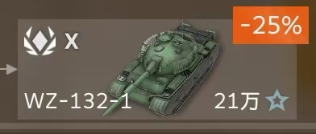
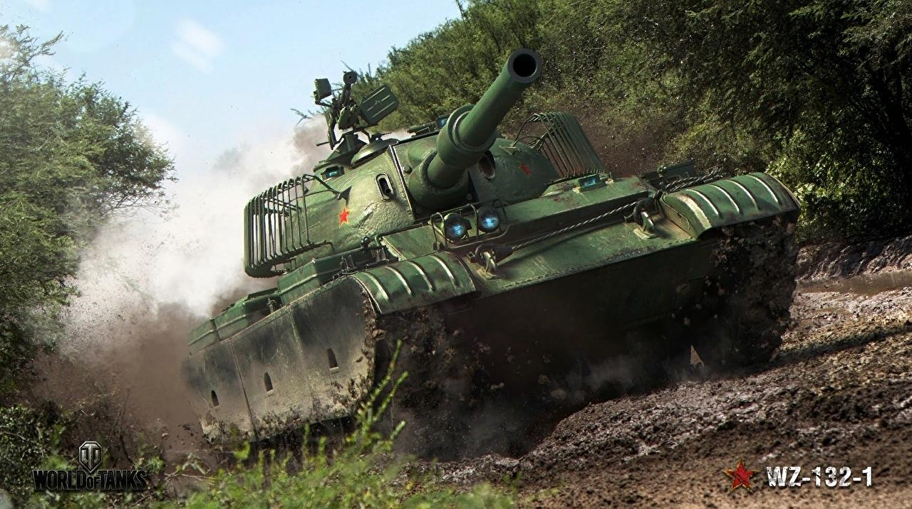

Congratulations! You pass the test and get Light Tank WZ-132-1!
Introduction
联合各种 62 型现代化项目的中国实验车。这个名字很传统。没有构建原型。
作为《坦克世界》中理想的“轻中型坦克”，它拥有相当合理的保护（轻型坦克中最好的之一），
这要归功于其非常坚固的炮塔和全方位间隔装甲，有效地保护它免受 HEAT 和 HESH 弹的伤害。
这辆坦克擅长担任火力辅助角色，并且在撤退前会受到炮塔装甲的一些惩罚。

The process must be hard!
Click here to get other tanks.